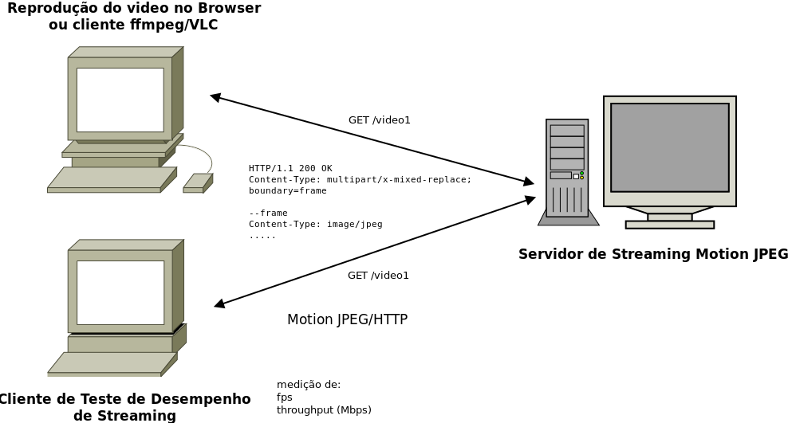

Redes de Computadores 2 - Prof. Ricardo da Rocha
</p>
<h1>Projeto de Implementação de Redes de Computadores 2</h1>
<h1>Visão geral</h1>
<p>Esta tarefa corresponde à atividade de avaliação da segunda parte do curso, onde discutimos programação com sockets.</p>
<p>Nesta tarefa você deverá implementar na linguagem de sua preferência um servidor de streaming de videos armazenados usando o padrão <a href="https://en.wikipedia.org/wiki/Motion_JPEG">Motion JPEG</a>, usando Motion JPEG sobre HTTP.</p>
<p>Embora possa parecer rebuscado, a protocolo em questão é bastante simples e na implementação você não precisará captura, manipular ou interpretar nenhum tipo de video ou imagem. O video será mantido em arquivos locais e o seu servidor terá que apenas transmitir o video, quando solicitado por um cliente. Por este motivo, essa tarefa não é muito mais difícil que criar um servidor HTTP simples.</p>
<p>Além do servidor, você deverá implementar um cliente para avaliar o desempenho da comunicação com o servidor.</p>
<h1>Descrição</h1>
<h2>Motion JPEG</h2>
<p>O padrão ou formato <a href="https://en.wikipedia.org/wiki/Motion_JPEG">Motion JPEG</a> (também chamado M-JPEG ou MJPEG) é um formato de compressão de video ond ecada frame do video é uma imagem JPEG comprimida individualmente. Nesse formato, transmitir um video significa transmitir as imagens JPEG de cada quadro que faz parte do video que são, então, exibidas por um cliente que é capaz de usar esse formato. Qualquer editor ou visualizador de imagens é capaz de interpretar e mostrar um quadro individual que possui a mesma complexidade de uma imagem JPEG usual.</p>
<p>Pelo fato de não adicional nenhum tipo de compressão adicional a um video, o formato é muito ineficiente, produzindo videos de tamanho muito grande, sem audio e cujo streaming pela rede é bastante limitado, acabando por ser usado em video de baixa qualidade. Por exemplo, o video <code>small.mp4</code> (veja "videos exemplo") que contém 383Kb no format MPEG e 438Kb no formato OGV, passa a ter 1,5Mb no formato M-JPEG (para um video de 5s). Entretanto, é um formato usualmente utilizado em câmeras IP de menor complexidade e usualmente compatível com a maioria dos navegadores web, porque não exige hardware simples para manipulá-lo. Não confunda este formato com o formato MPEG, que possui versões até 4 e é bastante eficiente.</p>
<p>O streaming de video M-JPEG utiliza o protocolo HTTP para transmissão. Um cliente requisita o streaming de um video por uma requisição HTTP <code>GET</code> e obtêm como resposta um conteúdo cujo cabeçalho <code>content-type</code>, que especifica o conteúdo da resposta HTTP, contém o valor <code>multipart/x-mixed-replace;boundary=&lt;padrao-limitador&gt;</code> que informa ao browser que o conteúdo será entregue em várias partes (cada parte é um frame do video) e o conteúdo dessa partes são identificados pelo delimitador indicado em <code>&lt;padrao-limitador&gt;</code>.</p>
<p>O exemplo abaixo mostra um exemplo de resposta de um servidor de streaming M-JPEG enviando um video composto de quatro frames. Observe o uso de <code>boundary</code> na resposta. Uma resposta também pode carregar o cabeçalho <code>Content-Length</code> para cada um dos frames, indicando o número de bytes daquele frame.</p>
<pre><code> HTTP/1.1 200 OK
Content-Type: multipart/x-mixed-replace; boundary=frame
--frame
Content-Type: image/jpeg
&lt;conteudo jpeg do frame 1&gt;
--frame
Content-Type: image/jpeg
&lt;conteudo jpeg do frame 2&gt;
--frame
Content-Type: image/jpeg
&lt;conteudo jpeg do frame 3&gt;
--frame
Content-Type: image/jpeg
&lt;conteudo jpeg do frame 4&gt;
</code></pre>
<!--
conversão
ffmpeg -i small.mp4 -f mjpeg small.mjpeg
Video: mjpeg, yuvj420p(pc), 560x320, q=2-31, 200 kb/s, 30 fps, 30 tbn, 30 tbc (default)
-->
<h3>Referências úteis</h3>
<ul>
<li><a href="https://blog.miguelgrinberg.com/post/video-streaming-with-flask">Implementação de um servidor de streaming em Python usando Flask</a></li>
<li><a href="https://developer.mozilla.org/en-US/docs/Web/Media/Formats">https://developer.mozilla.org/en-US/docs/Web/Media/Formats</a></li>
<li><a href="https://developer.mozilla.org/en-US/docs/Web/Media/Formats/Video_codecs">https://developer.mozilla.org/en-US/docs/Web/Media/Formats/Video_codecs</a></li>
</ul>
<h2>Arquitetura da Solução</h2>
<p>A figura abaixo mostra a arquitetura da solução que deve ser implementada. Estão dispostos na figura três estações:</p>
<ol>
<li>Servidor de streaming Motion JPEG</li>
<li>Cliente de reprodução de video - deve se comunicar com o servidor implementado, utilizando o protocolo Motion JPEG e exibir o respectivo video solicitado. Este deve ser um cliente qualquer que seja capaz de utilizar o protocolo como um navegador web, VLC ou ffmpeg. Você <strong>não deverá implementá-lo</strong>, mas a sua presenta na figura indica que o servidor desenvolvido deve funcionar com tais clientes.</li>
<li>Cliente de Teste de Desempenho - um cliente do protocolo que irá consumir videos do servidor com único propósito de avaliar o desempenho do seu protocolo em termos de <strong><code>fps</code></strong> (frames por segundo) e throughput em Mbps (ou kbps). Este cliente não deverá reproduzir o video, mas simplesmente coletar essas métricas durante a comunicação.</li>
</ol>
<p>A implementação deverá incluir os elementos (1) e (3) do cenário.</p>
<p></p>
<h2>Implementação do servidor</h2>
<p>O servidor deverá ser um programa escrito em qualquer linguagem - decisão a cargo do aluno - e deverá entregar aos clientes os videos solicitados. Como o protocolo usado é baseado em HTTP, o seu cliente deverá, além de interpretar requisições HTTP, ser capaz de construir uma resposta HTTP coerente com o protocolo Motion JPEG. Lembre-se que deverá ser possível acessar os seu servidor por um cliente real, como VLC ou ffmpeg. Como o protocolo de comunicação é baseado em HTTP, o socket servidor será necessariamente TCP e não precisará tratar de problemas como perda de mensagens. </p>
<p>Os videos servidos serão armazenados em formato de sequências de imagens JPG, armazenados em um diretório com o nome do video em questão. Por exemplo, na estrutura de diretórios a seguir ilustra os quadros pertencentes aos videos <code>/videos1</code> e <code>/video2</code> de um servidor. Cada quadro corresponde a uma das imagens jpeg que, neste caso, são identificadas pelo nome do arquivo com padrão <code>&lt;nome-do-video&gt;.&lt;quadro&gt;.jpg</code>.</p>
<pre><code> video1/
video1.1.jpg
video1.2.jpg
video1.3.jpg
video1.4.jpg
video1.5.jpg
video1.6.jpg
video1.7.jpg
...
video2/
video2.1.jpg
video2.2.jpg
video2.3.jpg
video2.4.jpg
...
</code></pre>
<p>Você é completamente livre para escolher os nomes dos arquivos que desejar e a forma de selecionar qual arquivo está associado a qual quadro. Necessariamente, devem ser arquivos co imagens jpg. </p>
<p>Nesse exemplo, um cliente que solicitar o video pela requisição HTTP <code>GET /video1</code>, será servido dos quadros presentes no diretório <code>video1</code>. A implementação do servidor é bastante simples: ele deve identificar em qual diretório está o video desejado, ler o conteúdo de cada arquivo com o conteúdo do quadro e incluir na resposta HTTP. Nenhuma interpretação do conteúdo dos arquivos é necessária.</p>
<h3>Requisitos obrigatórios</h3>
<ul>
<li>Os quadros dos videos devem ser obtidos das imagens jpg mantidas nos respectivos diretórios.</li>
<li>O protocolo do servidor deve ser compatível - e funcionar - com ao menos um cliente de reprodução de videos real, que pode ser um navegador web, VLC ou ffmpeg.</li>
<li>O seu servidor deve ser capaz de servidor diversos videos.</li>
<li>O protocolo utilizado deve ser Motion JPEG.</li>
</ul>
<h2>Cliente de Teste de Desempenho</h2>
<p>O <em>cliente para testes de desempenho</em> deve ser um cliente do protocolo Motion JPEG com o único propósito de testar o desempenho da comunicação mensurando valor de dois parâmetros de desempenho:</p>
<ul>
<li><strong>fps</strong> (frames por segundo): número de quadros por segundo recebidos do servidor, em média. O cálculo é simples, bastando dividir o número de quadros (ou figuras jpeg) recebidas em um video pelo tempo entre o inicio do recebimento do video e o fim.</li>
<li><strong>throughtput</strong> (ou vazão em Mbps ou Kbps): taxa de transmissão do video em bytes, bastando calcular o número de bytes de todo o video e dividir pelo tempo de transmissão.</li>
<li><strong>atraso</strong> (ms ou s): o tempo entre o envio de uma solicitação por um video e o inicio do seu recebimento.</li>
</ul>
<p>Teste o funcionamento do seu cliente usando o mininet com a taxa de transmissão e atrasos emulados e verificando a proximidade com o tempo gerado no seu cliente. Não espere que o tempo seja preciso, mas é obrigatório realizar esse teste para validar a sua implementação e verificar o desempenho da sua implementação.</p>
<h3>Requisitos obrigatórios</h3>
<p>O seu cliente deve:</p>
<ul>
<li>Utilizar o protocolo Motion JPEG</li>
<li>Ter sido validado com testes com o mininet, o qual deve ser descrito em um breve texto a ser incluído na sua implementação.</li>
</ul>
<!--
# Ferramentas de Auxílio
## Testes com Navegadores
## Geradores de Video para Teste
ffmpeg
-->
<h1>Prazos</h1>
<p>O trabalho deve ser entregue até o dia <strong>8/dezembro</strong> (domingo), pelo github classroom. </p>
<h1>Avaliação</h1>
<p>A entrega será avaliada segundo os seguintes critérios:</p>
<ol>
<li><strong>Funcionalidade</strong>: se a solução implementa todos as funcionalidades solicitadas e como solicitado. (PESO: 50%)</li>
<li><strong>Organização do código</strong>: se o código está organizado, com um mínimo de documentação para entender como executá-lo sem dificuldades. (PESO: 10%)</li>
<li><strong>Qualidade da implementação</strong>: se o código foi bem construído, com cuidados no uso das primitivas de sockets e da linguagem adotada. (PESO: 20%)</li>
<li><strong>Qualidade dos testes</strong>: se os testes realizados com a implementação foram adequados e permitiram avaliar o funcionamento da solução em diversas situações, sobretudo com relação ao seu desempenho. Esses testes devem estar documentados na entrega. (PESO: 20%)</li>
</ol>
<p>Caso o professor julgue necessário, ele poderá realizar uma arguição sobre o trabalho para avaliar o domínio do aluno. Nesse caso, valerão os seguintes pesos:</p>
<ul>
<li><strong>Funcionalidade</strong>: 25%</li>
<li><strong>Organização do código</strong>: 5%</li>
<li><strong>Qualidade da implementação</strong>: 10%</li>
<li><strong>Qualidade dos testes</strong>: 10%</li>
<li><strong>Domínio</strong>: 50%</li>
</ul>
<p>Neste caso, a nota final será a <strong>menor</strong> nota entre a nota calculada segundo os dois critérios.</p>
<h1>Requisitos de Entrega</h1>
<p>A sua solução pode ser implementada em qualquer linguagem de programação e <strong>deve ser INDIVIDUAL</strong>.</p>
<ol>
<li>O seu código deverá ser submetido pelo <a href="https://classroom.github.com/">GitHub Classroom</a>, no local indicado pelo email com o assunto: <strong><code>[RC2] submissão do projeto servidor de streaming M-JPEG</code></strong>. </li>
<li>A implementaçao é individuais e nenhum tipo de cópia ou similaridade com código, seja de outro aluno, seja da Internet ou livros, será aceita. </li>
<li>Em caso de qualquer tipo de cópia, os alunos envolvidos receberão <strong>zero</strong>. O seu código será testado quanto à cópia.</li>
<li>O professor <strong>ficará livre</strong> para solicitar uma apresentação do trabalho, na qual o aluno será questionado sobre detalhe da implementação, influenciando a nota final do projeto.</li>
</ol>
<p>